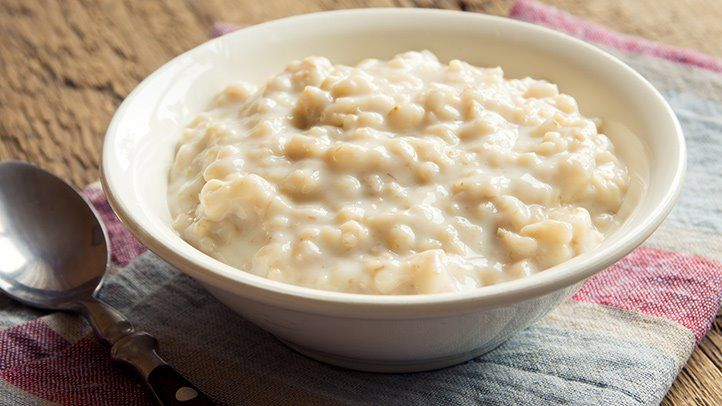

Oatmeal

Description
To make oatmeal, you add two parts water to one part rolled oats.
Add a pinch of salt and season with cinnamon as desired.
Ingredients
- Rolled oats
- Salt
- Cinnamon (optional)
Steps
- Add rolled oats to microwave-safe bowl
- Add water
- Microwave for five minutes
- Remove from microwave, stir, and let cool